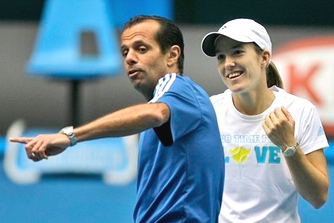
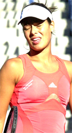
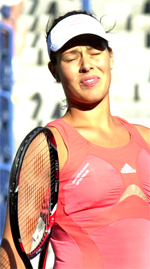
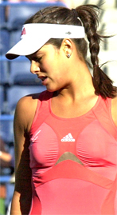

(start of section) | 🏠 Mental Game Trang chủ | Bài tiếp: → A Practical Guide to Peak Performance - Part 2
Hướng dẫn thực tiễn về hiệu suất đỉnh cao
Thư viện kiến thức quần vợt thống nhất toàn diện — Cơ bản, Phân tích kỹ thuật, Thư viện tham khảo và nhiều hơn nữa
Hướng dẫn thực tiễn về hiệu suất đỉnh cao
Jeff McCullough
Hướng dẫn thực tiễn để giúp bạn giành chiến thắng trong các trận đấu.
Trong bài viết này, tôi muốn giới thiệu một hệ thống nâng cao hiệu suất đơn giản, thực tiễn và dễ áp dụng, được thiết kế để loại bỏ sự không chắc chắn trong việc xử lý những áp lực và thách thức do thi đấu tạo ra. Theo quan điểm của tôi, hướng dẫn này mang lại cho tay vợt cơ hội tốt nhất để chơi quần vợt tốt nhất và giành chiến thắng trong nhiều trận đấu hơn.
Nhiều tay vợt quần vợt - đặc biệt là những tay vợt nghiệp dư - không có nền tảng tâm lý và cảm xúc vững chắc để đối mặt với những khó khăn của thi đấu. Ngay cả một số tay vợt chuyên nghiệp mà tôi gặp cũng không có phương pháp hệ thống nào để xử lý khía cạnh tâm lý của quần vợt. Những tay vợt này, bất kể trình độ của họ, đều "mò mẫm" và thường hy vọng rằng bằng cách "cố gắng hơn" và "sẵn sàng thắng" thì sẽ đạt được chiến thắng. Tôi gọi phương pháp này là "phương pháp búa". Nếu chỉ có phương pháp này hoạt động nhiều hơn thì tốt rồi.
Cũng có một nhóm khác gồm những tay vợt. Những tay vợt này rất nghiêm túc với khía cạnh tâm lý của trò chơi, và họ tự mình quá tải với quá nhiều thông tin mà không thể xử lý được những thông tin hữu ích nhất khi cần thiết. Họ đã đọc mọi bài viết và sách và xem mọi video. Nhưng tiếc rằng, chỉ tiếp xúc với nhiều thông tin hơn không phải là sự thay thế cho hành động tích cực trên sân.
Bạn có công cụ để giữ được tinh thần tích cực khi điểm số là 5-5 ở set thứ ba không?
Khi điểm số là 5-5 ở set thứ ba, một tay vợt cần một số lượng hạn chế các công cụ. Những công cụ dễ áp dụng và rất hiệu quả. Những công cụ này mang lại cho anh ta hoặc cô ấy cơ hội tốt nhất để bước ra khỏi sân với tư cách là người chiến thắng.
Áp lực tâm lý của những tình huống căng thẳng thường dẫn đến quá kích thích, với cơ thể bị ngập ngừng bởi adrenalin và các hóa chất sinh lý khác. Trong những điều kiện này, việc suy nghĩ rõ ràng, xây dựng giải pháp hoặc thậm chí chỉ hoạt động trên mặt vật lý trở nên rất khó khăn. Đây không phải là lúc để cố gắng hồi tưởng và truy cập mọi thứ bạn đã đọc trong sách của những nhà lý thuyết nổi tiếng nhất của trò chơi về khía cạnh tâm lý/emotional.
Ít hơn là nhiều
Tôi tin mạnh mẽ rằng tay vợt quần vợt có thể hưởng lợi rất nhiều từ một hệ thống nâng cao hiệu suất được rút gọn. Điều này là vì, như một huấn luyện viên làm việc, tôi đã thấy rất nhiều học viên của mình nở rộ dưới tác động của nó.
Ưu điểm lớn nhất của nó là không cần nhiều tháng hoặc nhiều năm để học. Nó có thể được học và áp dụng trong trận đấu tiếp theo của bạn. Và mỗi lần bạn sử dụng nó, bạn sẽ có khả năng thành công cao hơn. Khi nó trở thành thói quen, bạn sẽ nhận ra khả năng chơi ở mức tối đa của mình.
Hệ thống hoạt động rất tốt với các tay vợt trẻ.
Nếu bạn không có ý định đọc nhiều sách tâm lý thể thao kỹ thuật cao, hệ thống này là một phát hiện tuyệt vời, ngẫu nhiên. Nó hoạt động rất tốt với các tay vợt trẻ hơn đang phát triển khả năng suy nghĩ trừu tượng, và đặc biệt có giá trị với những tay vợt vừa bắt đầu thi đấu hoặc những tay vợt quay lại thi đấu sau một thời gian nghỉ. Nhưng nó cũng rất có lợi cho những tay vợt có kinh nghiệm lâu năm và thường xuyên thi đấu.
Công cụ cho thời điểm quyết định
Bất kể tuổi tác, năng lực hoặc kinh nghiệm, bạn sẽ khám phá ra những công cụ quan trọng nhất mà bạn cần trong thời điểm quyết định, những công cụ sẽ giải phóng bạn để chơi tốt nhất và mang lại cho bạn cơ hội tốt nhất để giành chiến thắng. Một khi bạn đưa hệ thống này vào trận đấu hàng ngày của mình, bạn sẽ giành chiến thắng trong nhiều trận đấu hơn bao giờ hết, đặc biệt nếu bạn là một trong những hàng ngàn tay vợt có lịch sử gập ghềnh khi nhiệt độ cao nhất.
Khi bạn giành chiến thắng trong một trận đấu, bạn sẽ có thể nói, "Có, tôi nghĩ tôi biết lý do tại sao tôi thắng và bây giờ tôi tin rằng tôi có thể làm lại điều đó." Và với nhiều lần thực hành và kinh nghiệm hơn với những kỹ thuật mới này, có cơ hội ngày càng tăng là điều này sẽ xảy ra.
Khi bạn thua trận đấu do yếu tố tâm lý/emotional, bạn sẽ có nhiều khả năng hơn để xác định được lý do tại sao bạn thua. Điều này mở ra khả năng thực hiện những sửa đổi cần thiết để bạn ít có khả năng thua trận đấu trong tương lai.
Jim Loehr, Alistair Higham, Allen Fox, Jeff Greenwald, Tim Gallwey (từ trái) — một số đóng góp lớn cho huấn luyện tâm lý, nhiều trong số họ là người đóng góp cho Tennisplayer!
James Loehr, Allen Fox, Rainer Martens, Vic Braden, Timothy Gallwey, Bob Rotella, Chuck Kriese, Jeff Greenwald, Alistair Higham, và John Yandell. Đây chỉ là một số tác giả đã đóng góp vào lĩnh vực này, và không có ngày nào mà không có ai đó ở đâu đó được hưởng lợi từ sự khôn ngoan của họ. Nhiều người trong số họ thực sự là người đóng góp cho phần Tâm lý Trò chơi của Tennisplayer.net. (Nhấp vào đây.)
8 thành phần
Như một huấn luyện viên làm việc, tôi đã tổng hợp những ý tưởng quan trọng nhất của họ và rút gọn chúng thành 8 thành phần, những thành phần có thể truy cập được dưới áp lực cạnh tranh, dễ áp dụng và quản lý.
8 thành phần là:
1) Vui vẻ
2) Chơi cho chính mình
3) Đi tìm những cú đánh của bạn
4) Trông tự tin
5) Quản lý căng thẳng
6) Thành phần nhận thức
7) Kỹ thuật chú ý
8) Ý chí giành chiến thắng
Trong bài viết đầu tiên này, chúng ta sẽ tập trung vào 4 thành phần đầu tiên: Vui vẻ, Chơi cho chính mình, Đi tìm những cú đánh của bạn, và Trông tự tin. Tháng sau, chúng ta sẽ xem xét bốn thành phần còn lại. Vậy hãy tiến vào trái tim của vấn đề này mà chúng ta gọi là trò chơi tâm lý.
Thành phần #1: Chúng ta đang có vui chưa?
Yếu tố chính mà tất cả các chuyên gia xác định là điều kiện tiên quyết cho thành công và thuốc chống lại việc chịu áp lực là có vui. Khi tôi huấn luyện một tay vợt trẻ sẵn sàng cho thi đấu cấp độ bắt đầu, tôi luôn hỏi họ câu hỏi sau: "Tại sao bạn chọn học cách chơi quần vợt?"
Không phải vui vẻ là lý do bạn bắt đầu chơi trò chơi này?
Đây luôn là một bài tập thú vị, vì có nhiều câu trả lời khác nhau mà tôi nhận được. Nếu câu trả lời thực sự không ngay lập tức xuất hiện, tôi sẽ đào sâu hơn một chút. Cuối cùng, câu trả lời gần như luôn là cảm giác hạnh phúc khi dây đàn đầu tiên chạm vào bóng, gửi quả bóng vàng mờ ấy ra không gian vật lý.
Hãy nghĩ lại lần đầu tiên bạn đánh một quả bóng quần vợt. Nó có vui không? Nếu bạn giống như tôi, nó là tình yêu ngay từ lần đánh đầu tiên. Trải nghiệm cảm giác tiếp xúc thú vị này vẫn còn sâu trong bộ nhớ của bạn. Nếu bạn có thể truy cập nó, có lẽ bạn có thể tái tạo lại sự hào hứng không thể diễn tả được.
Đối với hầu hết các tay vợt, trải nghiệm ban đầu đầy hạnh phúc này trở nên mờ nhạt, bị mất và ít được truy cập hơn. Cuối cùng, chúng ta bị cuốn vào thế giới đấu trường với tất cả những kỳ vọng và mục tiêu bên ngoài. Đó là điều không thể tránh khỏi và bình thường. Rất tiếc, nhiều tay vợt đã mất đi tầm nhìn về lý do thực sự khiến họ ban đầu quyết định chơi.
Khi chúng ta đánh nhiều quả bóng hơn, chúng ta trở nên ngày càng không nhạy cảm với trải nghiệm kỳ diệu ban đầu của mình. Khi chúng ta tiến triển trong hành trình của mình dọc theo đường cao tốc quần vợt, chúng ta thay thế trải nghiệm hạnh phúc ban đầu này bằng một loạt các kỳ vọng bên ngoài ngày càng tăng. Đó là những kết quả. Tôi đã thắng hay thua? Tôi đứng như thế nào so với những người chơi khác? Xếp hạng của tôi có đủ cao không? Và đó là vì chúng ta là những sinh vật cạnh tranh sống trong một môi trường rất cạnh tranh.
Đây là một sự thật: chúng ta phải nhận ra rằng chúng ta không thể luôn luôn thắng bất kể chúng ta chơi tốt đến mức nào. Xếp hạng của bạn có thể không luôn hướng về phía bắc dù bạn cố gắng hết sức. Bạn có thể không bao giờ là số một trong phân khúc của mình ngay cả khi bạn đạt được tiềm năng đầy đủ của mình. Vậy một tay vợt nên làm gì khi các chỉ số bên ngoài như xếp hạng - những thứ dễ tiếp cận hơn nhiều so với phần thưởng bên trong - trở nên quan trọng hơn?
Đôi khi các tay vợt cần tái tạo lại cảm giác vui vẻ khi là một tay vợt quần vợt.
Rất tiếc, một giải pháp là đánh giá thấp những trải nghiệm không trực tiếp thúc đẩy phần thưởng bên ngoài. Trong thời gian của tôi, tôi đã quan sát thấy nhiều tay vợt quần vợt bước ra khỏi sân sau khi thua cuộc và báo cáo rằng họ không tìm thấy gì có giá trị trong trải nghiệm.
Họ thua và đó chỉ là không vui. Họ không thể chấp nhận rằng họ không hoàn toàn kiểm soát được thế giới bên ngoài. Những tay vợt này có khả năng sẽ vẫn bị thất vọng, không hài lòng và có khả năng từ bỏ trò chơi lâu dài. Trừ khi họ tái phát hiện trải nghiệm vui vẻ ban đầu. Một số người không bao giờ làm vậy. Chúng ta mất họ khỏi trò chơi quần vợt, và họ mất nhiều hơn.
Thành phần #2: Chơi cho chính mình
Yếu tố cản trở lớn nhất đối với "hiệu suất cao" ở tất cả các cấp độ là sợ thua và cách này sẽ tác động đến tự tin của bạn. Đây là lý do tại sao những tay vợt có mức độ tự tin nội tại cao nhất thường trở thành những đối thủ tốt nhất của chúng tôi.
Tự tin mang lại sự cam kết đầy đủ.
Được trang bị nền tảng nội tâm vững chắc, sự sợ hãi về việc thua không làm họ sợ như những tay vợt khác. Bởi vì niềm tin tự nhiên của họ, họ có thể chơi với sự cam kết đầy đủ. Thắng hay thua, họ biết họ sẽ tinh thần và thể chất tốt. Họ có xu hướng phục hồi nhanh chóng sau một trận thua và sẵn sàng cho cơ hội báo thù trong trận đấu tiếp theo. Hiếm khi họ nghĩ đến việc từ bỏ trò chơi hoàn toàn.
Sau sợ hãi về việc thua, yếu tố cản trở mạnh thứ hai là quá lo lắng về ý kiến của người khác. Bạn bè của tôi sẽ nghĩ gì về tôi nếu tôi thua? Hay đồng nghiệp của tôi? Vợ tôi? Bạn đồng đội poker của tôi? Cha mẹ tôi? Huấn luyện viên của tôi? Cùng với những tay vợt chuyên nghiệp, họ lo lắng về tất cả những điều trên, cộng với công chúng và truyền thông.
Tất cả những lo ngại này là một thách thức thực sự vì chúng ta là những sinh vật xã hội, tự nhiên có xu hướng lo lắng về phản ứng của người khác. Chúng ta tất cả đều có tâm hồn và thích được đánh giá cao hơn là bị khinh rẻ. Nhưng đối với các vận động viên cạnh tranh, những lo ngại bình thường này có thể bị biến đổi thành một mối lo ngại tàn phá đối với ý kiến của người khác. Và điều này có thể có tác động tiêu cực rất lớn đến hiệu suất.
Đối với hầu hết chúng ta, cuộc chiến để thiết lập một trung tâm nội tâm vững chắc về tự tin là không bao giờ hoàn toàn thắng. Nhưng đến mức nào chúng ta có thể giữ những lo ngại tập trung bên ngoài, chúng ta có khả năng thực hiện tốt hơn.
Tập trung vào dây đàn giữ cho sự chú ý của bạn bên trong sân.
Tôi đưa ra cho các tay vợt hai hướng dẫn đơn giản để giữ tinh thần tích cực trong trận đấu:
Đầu tiên, giữ mắt của bạn bên trong sân càng nhiều càng tốt. Điều này có thể nghe đơn giản và rõ ràng, nhưng hãy đi đến các giải đấu quần vợt trẻ và xem bao nhiêu tay vợt liên tục trong liên lạc cảm xúc với bạn bè, gia đình hoặc thậm chí là những người có thể ở đó cho đối thủ của họ! Thường xuyên, tại các điểm quan trọng trong trận đấu, bạn sẽ thấy họ nghiên cứu những gì đang xảy ra trong các trận đấu trên các sân gần đó.
Một nghi thức giúp mục tiêu này là điều chỉnh dây đàn liên tục. Đối với hầu hết các tay vợt, đặc biệt là những tay vợt có ít tự tin và kinh nghiệm hơn, điều này không phải là một ý tưởng tốt. Họ cần cố gắng chống lại "quần vợt nhìn lướt" bằng cách phát triển kỷ luật "quần vợt nhìn tập trung". Bất kỳ thứ gì hoặc người nào trong phạm vi thị giác có thể gây phân tâm đột ngột khiến họ rơi vào chu kỳ "cường độ tiêu cực".
"Ồ, đó là chú của mẹ tôi, Bob. Tôi tự hỏi anh ấy có còn nhớ không ngày Giáng sinh khi tôi vô tình đặt cây Giáng sinh của anh ấy vào lửa không?" Hoặc, "Suzy đang chơi bên cạnh tôi. Tại sao dịch vụ của cô ấy tốt hơn dịch vụ của tôi nhiều như vậy?" Bạn không cần phải đi đến đó trên điểm phá vỡ, vì vậy hãy thực hành "kỷ luật thị giác".

Justine đã liên lạc với Carlos, nhưng đây là ngoại lệ.
Tất nhiên, có những ngoại lệ. Một số tay vợt - Justine Henin là một ví dụ - thực sự tìm thấy cảm hứng trong đôi mắt của một huấn luyện viên hoặc người quan trọng khác ở trên khán đài. Nhưng điều này có thể rất rủi ro. Những người mà các tay vợt quay lại trong những lúc quan trọng có thể không có khả năng kiểm soát cảm xúc tốt như một huấn luyện viên như Carlos Rodriguez, người luôn gửi năng lượng đúng đắn cho Justine.
Đối với hầu hết chúng ta, tôi nghĩ tốt nhất là giữ mắt và tâm trí của bạn tập trung vào nhiệm vụ hiện tại. Những thứ này cần phải "bị chặn". Các nhà tâm lý học thể thao gọi một tay vợt đặc biệt tốt trong việc này là một "người lọc". "Người không lọc" dễ bị rối loạn liên tục. Bất kỳ con chim, con người, âm thanh, chuyển động hoặc sự thay đổi môi trường không thể cảm nhận được nào cũng trở thành kẻ thù tiềm năng khi tay vợt nhất quyết phải theo dõi mọi thứ đang xảy ra xung quanh anh ta.
Loại "lọc" kỷ luật này là một kỹ năng rất khó để thành thạo vì như là con người, chúng ta tất cả đều có một "phản ứng định hướng" tự nhiên. Chúng ta rất nhạy cảm với môi trường mà chúng ta đang hoạt động vì sự cảnh giác như vậy có giá trị sống còn rất mạnh.
Mỗi tay vợt nên cố gắng chơi với sự hấp thụ hoàn toàn.
Học cách giữ "tập trung" hoàn toàn là một kỹ năng được học với một đường cong học tập đáng kể. Ít người nào đạt được "hấp thụ" hoàn toàn trong thời gian dài. Tuy nhiên, sự thành thạo về sự tập trung tối đa và kéo dài là điều mà mỗi tay vợt nên hướng đến.
Vì vậy, cũng như các tay vợt cần tránh sự lo lắng quá mức về những thứ bên ngoài phạm vi kiểm soát của họ - chẳng hạn như kết quả - họ cũng cần tránh chú ý đến bất kỳ và tất cả các yếu tố phân tâm hoặc cản trở khác bên ngoài mình trong suốt trận đấu.
Khi chúng ta nói về mục tiêu hiệu suất thay vì mục tiêu kết quả, có nhiều mục tiêu kỹ thuật cao như "đặt nhiều xoáy cuộn lên cú trái tay của bạn" hoặc "đưa 70% dịch vụ đầu tiên vào", ví dụ. Có những mục tiêu chiến thuật như "đánh cú thuận tay sâu hơn và xuống đường để cú trái tay của họ", "đến gần mạng nhiều hơn", và "sử dụng cú bỏ nhỏ khi có cơ hội", ví dụ.
Chúng đóng một vai trò rất quan trọng trong việc tổ chức cách tiếp cận của một người với trận đấu và giúp tay vợt ở nhiều hơn trong hiện tại và ít hơn trong quá khứ gần đây - nơi những lỗi của bạn có thể tra tấn bạn tàn nhẫn - hoặc trong tương lai nơi một sự lo lắng quá mức về kết quả xấu có thể chờ đợi.
Thuốc chống lại việc bị kẹt là đi tìm những cú đánh của bạn.
Cam kết đầy đủ
Cuối cùng, tuy nhiên, có một mục tiêu chung hơn mà tôi nghĩ là quan trọng nhất: Chuck Kriese nói rằng, "dạy vận động viên giá trị của rủi ro khi thực hiện một Cam kết đầy đủ thường là quà tặng lớn nhất mà một huấn luyện viên có thể tặng cho tay vợt của mình." Quá nhiều tay vợt sẵn sàng thực hiện một cam kết chỉ một phần để loại bỏ rủi ro và bảo vệ hình ảnh của mình. Không có điều này, việc đặt các mục tiêu hiệu suất cụ thể khác có thể không hiệu quả.
Nếu một tay vợt chưa thực hiện cam kết đầy đủ và thua, điều này ít gây đe dọa đến tự tin của họ hơn, vì tay vợt có thể từ bỏ trách nhiệm. Đây là lý do tại sao việc tạo ra một "lý do" cho một hiệu suất kém là một chiến lược phổ biến.
Chỉ khi một người thực hiện cam kết đầy đủ thì anh ta hoặc cô ấy mới có thể chịu trách nhiệm đầy đủ cho kết quả. Tay vợt phải sẵn sàng sống với những gì xảy ra và chấp nhận kết quả bất kể ai khác có nói hoặc nghĩ gì. Đây là cách tốt nhất để loại bỏ các ảnh hưởng bên ngoài và đảm bảo rằng bạn là người thực sự kiểm soát những gì đang xảy ra trong các trận đấu của mình. Như Chuck Kriese nói, "Chơi để thể hiện, không phải để ấn tượng." Mục tiêu chính là chơi cho chính mình. Đây chính là cam kết đầy đủ. Gần như tất cả các nhà tâm lý học thể thao đồng ý rằng việc thiết lập một "trung tâm kiểm soát nội tâm" theo cách này là một yếu tố quan trọng trong thành công cạnh tranh.
Thành phần #3: Đánh ra và đi tìm những cú đánh của bạn
Jim Loehr cho chúng ta biết rằng khi chúng ta không chơi tốt nhất, chúng ta hoặc bị kẹt, tự hủy với cơn giận, hoặc bị kẹt. (Nhấp vào đây để đọc tất cả các bài viết tuyệt vời của anh ấy trên Tennisplayer.) Những hậu quả tiêu cực này đều liên quan đến sự thiếu cam kết đầy đủ.
Trong kinh nghiệm của tôi, nguyên nhân chính gây khó chịu hàng ngày là "con quỷ" gây khó chịu. Tuy nhiên, khi quan sát các tay vợt của tôi, tôi cũng thấy sự pha trộn của nhiều sắc thái khác nhau về cơn giận và sự tự hủy hoại.
Khi các tay vợt chơi trong sợ hãi, họ thường dễ dàng "đẩy", "chạm" hoặc "bỏ nhỏ" bóng quanh sân. Vì hệ thống của họ bị kích thích quá mức bởi các hormone căng thẳng, họ không di chuyển tốt hay suy nghĩ rõ ràng. Thông thường, họ không thể tạo ra đủ sức mạnh kiểm soát để tấn công hoặc thậm chí trung hòa đối thủ, và hiệu suất của họ thường xấu đi dần trong suốt trận đấu.
Nếu bạn đã cam kết đầy đủ, bạn có thể chấp nhận hậu quả, thắng hay thua.
Trong những điều kiện này, các tay vợt đôi khi bước ra khỏi sân với đầu thấp. Họ không chỉ thua cuộc, mà còn cảm thấy vì sự chiếm ưu thế của yếu tố sợ hãi này, họ không thể đưa ra nỗ lực tốt nhất của mình.
Đây là tình huống khác biệt so với việc bước ra khỏi sân như một "người thua cuộc" chính thức, nhưng với đầu cao và sự tự tin vững chắc rằng bạn đã thực sự cam kết đầy đủ.
Khi tôi đang thi đấu chuyên nghiệp, tôi đã chống lại các tác động thần kinh sinh lý của "phản ứng choking" bằng cách dán mục tiêu hiệu suất của mình lên bên cạnh vợt. Khi cơ bắp của tôi căng thẳng hơn một công việc dây đàn 80 pound, khi hơi thở tiếp theo khó tìm thấy, khi tâm trí tôi đang điên cuồng, khi chân tôi như những quả cân chì, tôi cảm thấy rất an tâm khi có thể nhìn xuống và đọc "Đánh ra và đi theo những cú đánh của bạn".
Đột nhiên, có sự giải phóng căng thẳng. Tôi di chuyển chân tốt hơn, đưa mình vào vị trí tốt hơn, tạo ra tốc độ đầu vợt nhiều hơn và cải thiện mục tiêu của những cú đánh của mình. Tôi tiến gần hơn đến sự cam kết đầy đủ và tôi chắc chắn đang có rất nhiều niềm vui hơn.
Hãy để súng của bạn nổ và xem điều gì sẽ xảy ra.
Như người ta từng nói trong Tây Old: "Nếu bạn sắp chết, tốt nhất là chết với súng của bạn đang nổ". Và trên sân tennis, nếu bạn sắp thua, tốt nhất là thua khi cố gắng chơi trò chơi của mình, thay vì một trò chơi giả tạo. Bằng cách này, sự cam kết đầy đủ có thể trở thành bí mật để vượt qua choking. Càng nhiều bạn đi theo những cú đánh của mình, càng có cơ hội tốt hơn bạn sẽ đánh trúng vào những thời điểm quan trọng.
Nhưng có một cảnh báo. "Đánh ra" có thể là một mục tiêu có vấn đề và nguy hiểm đối với một số tay vợt. Thay vì đưa bạn trở lại sự cam kết đầy đủ, một số tay vợt có thể sử dụng nó như một cách hợp lý để tự hủy hoại trận đấu khi áp lực trở nên không thể chịu đựng được. Hợp lý hóa rằng họ đang đánh ra, họ sẽ cam kết một loạt lỗi để loại bỏ sự khó chịu của choking.
"Đánh ra" không có nghĩa là đánh quá. Nếu bạn có xu hướng này hoặc huấn luyện một người có xu hướng tự hủy hoại như vậy, thì tốt nhất nên giữ mục tiêu hiệu suất này bí mật cho đến khi người nhận đạt được mức độ nhận thức về bản thân lớn hơn.
Thành phần #4: Trông tự tin
Tôi sẽ bảo rằng việc chuẩn bị trước trận đấu tốt nhất bắt đầu từ khi bạn bước vào sân. Đối với một số tay vợt, nó cần bắt đầu sớm hơn trong cùng ngày đó, hoặc thậm chí vài ngày trước. Một số tay vợt sẽ tìm ra rằng việc xem lại mục tiêu hiệu suất của mình và sử dụng tự nói tích cực và hình dung hóa trước các trận đấu là cần thiết để tạo ra sự tập trung tích cực đầy đủ.
Tự tin: điều bạn thể hiện là điều thế giới sẽ nhận thức.
Trong mọi trường hợp, điều rất quan trọng là một khi bạn bước qua cánh cửa của câu lạc bộ, bạn thể hiện hình ảnh tự tin không chỉ đối với đối thủ của mình mà còn đối với thế giới rộng lớn. Hãy nhớ, thế giới là gương của bạn. Nếu bạn trông tự tin, thế giới sẽ phản chiếu lại sự tự tin đó cho bạn và điều đó sẽ giúp tăng cường và tăng mức độ tự tin trải nghiệm của bạn. Hãy cho đối thủ của bạn và khán giả trong vở kịch của trận đấu của bạn đủ cơ hội để xác thực cách bạn đang cố gắng cảm thấy bên trong.
Có lẽ bạn không thực sự tự tin như bạn muốn. Hầu hết các tay vợt cũng không. Không sao cả. Hãy trông tự tin và bạn sẽ bắt đầu cảm thấy tự tin. Không thể tránh khỏi, theo thời gian, bạn sẽ tạo ra sự tự tin chân thật. Như câu nói cũ nói, "Giả vờ cho đến khi bạn làm được", và tôi sẽ thêm vào đó, "Nếu bạn giả vờ, bạn sẽ cuối cùng sẽ làm được".
Với thời gian và nỗ lực, bạn sẽ sở hữu sự tự tin đó, dù bạn là người Underdog hay người Favorite. Bạn sẽ phát triển niềm tin vào khả năng của mình để thắng từ bất kỳ vị trí nào trong hai vị trí này. (Để biết thêm về cách chơi từ vị trí Favorite hoặc Underdog, hãy nhấp vào đây.)
Bằng cách trông tự tin, bạn tăng đáng kể cơ hội giành chiến thắng. Kết nối tâm-thân rất mạnh mẽ, nếu cơ thể của bạn thể hiện sự tự tin không thể rung động, thì tâm trí của bạn sẽ cuối cùng cũng sẽ theo.
Các nghi thức giữa điểm là rất quan trọng để tạo ra sự tự tin về mặt thể chất.
Tất cả các chuyên gia đều tôn vinh tầm quan trọng của ngôn ngữ cơ thể và dành cho nó một vị trí nổi bật trong công việc của họ. Nghiên cứu cơ bản đã được thực hiện bởi Jim Loehr. Bài thuyết trình của anh về các giai đoạn của sự hiện diện thể chất tự tin giữa các điểm là bắt buộc phải đọc để phát triển ngôn ngữ cơ thể tích cực độc đáo của riêng bạn. (Nhấp vào đây để đọc các bài viết của Jim, bao gồm phân tích gần đây tuyệt vời của anh về Rafael Nadal.)
Như Allen Fox và những người khác đã lưu ý, trong một trận đấu tennis căng thẳng, nửa số những gì xảy ra sẽ là tiêu cực. Đó là, bạn sẽ thua khoảng một nửa tất cả các điểm bạn chơi.
Thua một điểm được tranh luận gay gắt vào thời điểm quan trọng có thể rất đau đớn và khuyến khích. Nhưng nếu bạn thực sự kiểm soát được ngôn ngữ cơ thể của mình, bạn có thể loại bỏ những cảm xúc tiêu cực này và khôi phục lại sự hiện diện thể chất tích cực trong thời gian giữa các điểm.



Xem Ana Ivanovic thay đổi thể chất từ tiêu cực sang tích cực sau một điểm thua đau đớn.
Xem chuỗi tuyệt vời từ J. Gregory Swendsen’s new portrait of Ana Ivanovic. (Nhấp vào đây để xem toàn bộ chân dung.) Rất đáng kinh ngạc, cô ấy từ độ sâu của sự thất vọng đến một biểu cảm lạc quan và sự tự tin thể chất trong khoảng 6 khung hình, có lẽ ít hơn 15 giây. Cơ thể của bạn không nói dối và các tay vợt giỏi học cách kiểm soát những gì nó truyền đạt.
Hơi thở
Ngoài ngôn ngữ cơ thể, hơi thở tốt là rất quan trọng để tạo ra và duy trì sự tự tin. Nó rất khó cho bất kỳ ai chưa bao giờ chơi tennis chuyên nghiệp để hiểu nó có thể căng thẳng đến mức nào, ít nhất là vào những thời điểm nhất định trong những trận đấu nhất định.
Bạn có thể mô tả một tay vợt trong cơn choking như một người có rối loạn lo âu đang mặc quần áo tennis. Và khi bạn ở trong trạng thái này, điều đó cũng rõ ràng với đối thủ của bạn. Và điều đó có thể cho anh ta một sự tăng cường cảm xúc có thể đảo ngược cân bằng.
Choking, một cách nói, là không thể thở. Vì vậy, vượt qua choking đòi hỏi bạn phải tái thiết lập khả năng thở bình thường và sâu.
Hơi thở, sự thư giãn, sự tự tin và hiệu suất được liên kết chặt chẽ. Sự oxy hóa máu và não dẫn đến các thay đổi về mặt tinh thần và thể chất. Đột nhiên, chân di chuyển tốt hơn, não của bạn lại giao tiếp với "cubit" của bạn, và bạn không chỉ nhớ rằng bạn đến với một kế hoạch trò chơi mà còn có thể cố gắng thực hiện nó.
Học cách thở sâu hệ thống giữa các điểm.
Trái tim của bạn không còn nghe như một tiếng nổ sonic trong đầu và mồ hôi đã giảm đến mức bạn có thể tự tin rằng bạn có thể phục vụ mà không làm vợt bay ra khỏi tay và gặp nguy hiểm có thể xảy ra trên sân cứng phía trước bạn.
Khi tay vợt tennis chuyên nghiệp bị áp lực, điều tốt nhất họ có thể làm để đưa các hệ thống thể chất, tinh thần và cảm xúc trở lại cân bằng là hơi thở. Tôi không nói về hơi thở thông thường chỉ đảm bảo sự sống của chúng ta về mặt vật lý. Tôi đang nói về hơi thở có chủ đích, sâu.
Kỹ thuật này đã được sử dụng lần đầu tiên bởi các nhà tâm lý trị liệu hàng thập kỷ trước đây như một góc đá của quản lý căng thẳng.
Loại hơi thở này cần được tích hợp nghiêm ngặt vào các quy trình giữa điểm và thay đổi của bạn. Càng sợ hãi người chơi trở nên, càng nhiều hơi thở sâu anh ta hoặc cô ấy sẽ cần để được chuẩn bị đầy đủ cho trận đấu nhỏ mà chúng ta gọi là một điểm tennis.
Tôi luôn nhắc nhở các tay vợt của mình rằng không có giới hạn số lượng hơi thở mà họ được phép lấy trong vòng 20 giây mà họ được cấp giữa các điểm. "Hãy lấy bao nhiêu bạn cần," tôi nói. "Điền đầy phổi của bạn đến đỉnh và giữ nó trong một khoảng thời gian dài, và làm điều đó một cách không gọi quá nhiều sự chú ý đến việc bạn đang làm nó."
Mặc dù bạn đang "chơi cho chính mình" và bạn muốn không quan tâm đến những gì ai đó khác (bao gồm cả đối thủ của bạn) có thể rút ra từ bài tập hơi thở này, một phần quan trọng của việc xuất hiện tự tin là không tiết lộ rằng bạn có thể đang vật lộn với lo âu.
Bạn nên hít vào sâu trong hai nhịp tim của thời gian. Hơi thở theo cách này cần trở thành một phản ứng tự động đối với sự kích thích tâm lý và sinh lý. Hãy thực hành nó một cách cẩn thận mỗi khi bạn bắt đầu cảm thấy sợ hãi hoặc choking. Cuối cùng, bạn sẽ bắt đầu làm điều đó tự nhiên và không cần cố gắng khi cơ thể của bạn cần thư giãn.
Vậy là chúng ta đã có bốn thành phần đầu tiên của hướng dẫn thực tiễn của chúng tôi về hiệu suất đỉnh cao! Hãy theo dõi trong tháng tới khi chúng ta làm việc với bốn thành phần tiếp theo trong việc phát triển và duy trì hiệu suất đỉnh cao.

Jeffrey F. McCullough đã là một chuyên gia huấn luyện hàng đầu ở California trong hơn 30 năm. Vào những năm 80 đầu tiên, anh ấy đã làm việc tại Golden Gate Park nổi tiếng của San Francisco, nơi anh ấy dạy cùng với John Yandell - và trong một năm chia sẻ một căn hộ nhìn ra biển ở khu phố Sunset của thành phố. Trong 13 năm qua, anh ấy đã dạy ở San Diego, California tại George E. Barnes Family Jr. Tennis Center. Chuyên về phát triển các tay vợt trẻ, anh ấy đã huấn luyện hơn 50 tay vợt trẻ đã giành chiến thắng trong các giải đấu ở tất cả các cấp độ trong chơi USTA. Jeff cũng là tác giả của tác phẩm cơ bản về trò chơi hai tay, "Two Handed Tennis: How to Play a Winner's Game."

Trong "Two-Handed Tennis: How to Play a Winner's Game," Jeffrey F. McCullough đã nêu ra lần đầu tiên toàn bộ lịch sử của phong cách hai tay, các khác biệt cơ học sinh học cơ bản giữa một và hai tay - bao gồm các ưu điểm khác nhau của phong cách sau, và mô tả chi tiết cơ học của tất cả các cú đánh chính của trò chơi hai tay trong 3 khu vực của sân tennis, bao gồm cách phát triển một cú thuận tay hai tay trong nhiều biến thể. Tác phẩm kinh điển này được xuất bản lần đầu tiên vào năm 1984. Nhấp vào đây để đặt hàng!
Nguồn: tennisplayer.net lưu trữ — A Practical Guide to Peak Performance - Part 1.docx (John Yandell teaching library, 2002-2022). Được trích xuất và hiển thị dưới dạng HTML cho Tennis Future Lab.